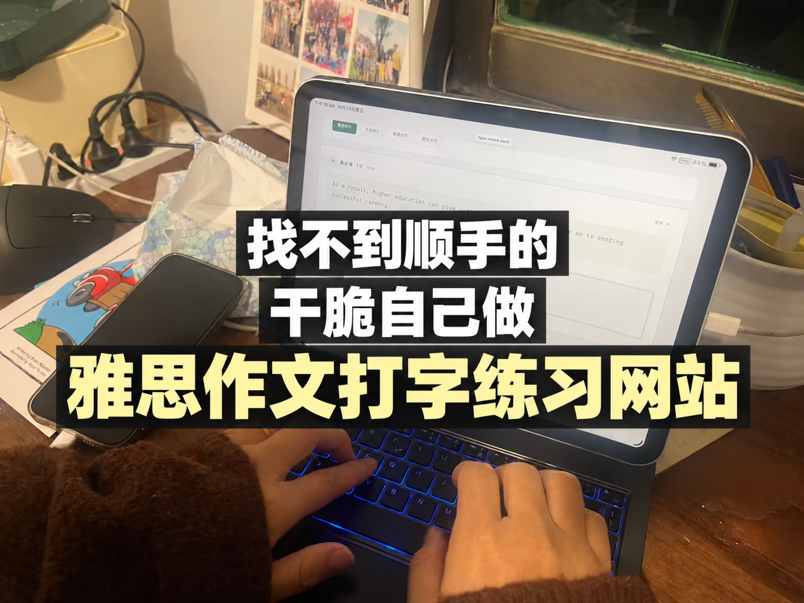

1 / 5学习照片与网站功能展示。封面使用图片工具辅助排版，功能截图不代表学习成绩。
做网站的起因
找不到顺手的雅思练习网站，自己做了一个
嗨，好久不见！👋 最近一直在家苦练雅思。
练到作文才发现，自己的打字速度跟不上😂
没找到合适的雅思作文练习网站，就在老公的支持下，借助AI自己做了一个💻
✍️ 可以整篇练，也可以分句练；对照着打、遮住原文再写都行。
🤖 还加了AI助手、表达评析和逐词核对，卡住了就问，写完再检查一下。
自己用了半个月，越用越喜欢，哈哈哈🥳
小网站还没起名，你们觉得叫什么好？💡
#雅思备考 #雅思写作 #雅思范文 #雅思练习 #雅思打字练习 #雅思作文打字 #雅思范文打字练习 #雅思真题范文打字练习 #雅思作文 #雅思机考